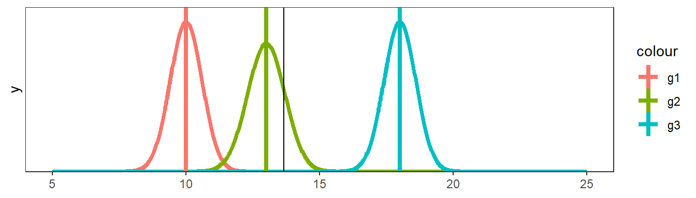

library(AgroR)Warning: package 'AgroR' was built under R version 4.2.1set.seed(1)
trats <- c("C1", "C2", "C3", "C4")
sketch(trats, r = 4)
“Muito melhor uma resposta aproximada à pergunta certa, que muitas vezes é vaga, do que uma resposta exata à pergunta errada, que sempre pode ser feita com precisão.” — John Tukey
As análises realizadas até agora tinham como objetivo verificar a existência de diferenças entre as médias de duas amostras. Porém, quando deseja-se estudar o efeito de “grupos de fatores” sobre determinado fenômeno, a análise da variância (ANOVA) é indicada. A ANOVA atribui a diversos fatores partes da variabilidade dos dados.
Fisher e Mackenzie (1923) estudando a variação de diferentes cultivares de batata, publicaram o primeiro trabalho demonstrando o uso da ANOVA para a avaliação de experimentos agrícolas. O método da ANOVA se tornaria popular e amplamente utilizado após Fisher estabelecer as bases teóricas e os pressupostos desta técnica (Fisher 1925, 1935).
Os delineamentos experimentais são partes importantes da ANOVA. Em seções próprias, serão apresentados os mais comuns: o delineamento inteiramente casualisado (DIC) e o blocos ao acaso (DBC). Na seção Experimentos fatoriais são discutidos formas de arranjar os tratamentos na área experimental, como por exemplo, em parcelas subdivididas.
Os principios básicos da experimentação são a casualisação e a repetição. A repetição possibilita que o erro seja estimado; a casualisação que eles sejam independentes. Um terceiro princípio (não obrigatório) é o controle local (ou bloqueamento). O bloqueamento é utilizado no No DBC como objetivo isolar parte da variação residual do modelo DIC para uma fonte de variação conhecida (BLOCO). Com isso (principalmente quando há efeito de bloco), a precisão da análise é maior.
Para realizar a casualização em um experimento de delineamento inteiramente ao acaso, pode-se utilizar a função sketch do pacote agroR. Neste exemplo, simulo a casualização de quatro tratamentos (“C1”, “C2”, “C3” e “C4”) em um ensaio conduzido em delineamento inteiramente casualizado (DIC) com quatro repetições (r).
library(AgroR)Warning: package 'AgroR' was built under R version 4.2.1set.seed(1)
trats <- c("C1", "C2", "C3", "C4")
sketch(trats, r = 4)
Para casualização em DBC, a mesma função sketch é usada. No entanto, utiliza-se o argumento design para indicar que o delineamento é um DBC
set.seed(1)
trats <- c("C1", "C2", "C3", "C4")
# casualização em DBC
sketch(trats, r = 4, design = "DBC")
# inverte a posição dos blocos
sketch(trats, r = 4, design = "DBC", pos = "column")
Na figura abaixo é mostrado como o DBC pode ser utilizado para considerar fontes de variação conhecida na área experimental. Neste caso, um gradiente de fósforo conhecido é notado no solo, onde maiores valores são observados na parte inferior e menores na parte inferior. Assim, os blocos podem ser alocados de modo que cada tratamento seja casualizado dentro de grupos de unidades experimentais homogêneas (blocos).

Independente do delineamento, os pressupostos do modelo estatístico são que os erros são independentes, homocedásticos e normais:
\[ {\boldsymbol{\varepsilon }} \sim {\textrm N}\left( {0,{\boldsymbol{I}}{\sigma ^2}} \right) \]
Esses pressupostos são necessários para que o teste F seja utilizado na análise de variância. Sob normalidade dos resíduos e hipótese nula \(H_0\), a razão entre as somas de quadrado de tratamento e resíduo tem distribuição F (Rencher and Schaalje 2008). Já em condições de não normalidade dos resíduos, o poder do teste (probabilidade de rejeitar \(H_0\)) é reduzido. Apesar disso, não há grandes mudanças no erro tipo I quando a pressuposição de normalidade é violada (Senoglu and Tiku 2001), e por isso ele é considerado robusto.
Abaixo, é apresentada a distribuição F considerando 4 e 20 como graus liberdade do tratamento e erro, respectivamente. Note que o valor em x em que acumula à direita 0,05 é o conhecido F tabelado.
library(ggplot2)
#| code-fold: true
#| code-summary: "Mostrar código"
df1 <- 4
df2 <- 20
(ftab <- qf(0.05, df1, df2, lower.tail = FALSE))[1] 2.866081ggplot() +
scale_x_continuous(limits = c(0, 6),
breaks = c(0, 2, ftab, 4, 6)) +
stat_function(fun = df,
geom = "area",
fill = "forestgreen",
xlim = c(ftab, 6),
args = list(
df1 = df1,
df2 = df2
)) +
stat_function(fun = df,
geom = "line",
size = 1,
args = list(
df1 = df1,
df2 = df2
)) +
theme_bw(base_size = 16) +
theme(panel.grid.minor = element_blank()) +
scale_y_continuous(expand = expansion(mult = c(0, .1)))+
labs(x = "Valor de F",
y = "Probabilidade acumulada",
title = "Distribuição F (DF1: 4, DF2: 20)")
Os dados utilizados neste exemplo estão na planilha QUALI do conjunto de dados data_R.xlsx. Os próximos códigos carregam o conjunto de dados e criam um gráfico do tipo boxplot para explorar o padrão dos dados.
library(tidyverse)
library(metan)
library(rio)
library(AgroR)
url <- "http://bit.ly/df_biostat"
df <- import(url, sheet = "QUALI")
str(df)'data.frame': 20 obs. of 3 variables:
$ BLOCO : num 1 1 1 1 1 2 2 2 2 2 ...
$ HIBRIDO: chr "NP_1" "NP_2" "NP_3" "NP_4" ...
$ RG : num 8.82 9.12 7.74 6.48 4.06 ...p1 <-
ggplot(df, aes(HIBRIDO, RG))+
geom_hline(yintercept = mean(df$RG), linetype = "dashed")+
geom_boxplot()+
stat_summary(geom = "point", fun = mean, shape = 23) +
stat_summary(aes(label = round(after_stat(y), 2),
x = HIBRIDO),
fun=mean,
geom="text",
hjust=-0.3)
p2 <-
ggplot(df, aes(factor(BLOCO), RG))+
geom_hline(yintercept = mean(df$RG), linetype = "dashed")+
geom_boxplot()+
stat_summary(geom = "point", fun = mean, shape = 23) +
stat_summary(aes(label = round(after_stat(y), 2),
x = BLOCO),
fun=mean,
geom="text",
hjust=-0.3)
p1 + p2
Analizando o boxplot acima é razoável dizer que as médias dos tratamentos são diferentes, principalmente comparando o NP_1 com NP_5. Esta suspeita de diferença, no entanto, deve ser suportada com a realização da análise de variância.
No pacote AgroR, quando os fatores são qualitativos, a análise complementar aplicada é a comparção de médias. A função DIC() do pacote retorna a tabela da ANOVA, a análise de pressupostos (normalidade e homogeneidade) e o teste de comparação de médias.
mod_dic <- with(df, DIC(HIBRIDO, RG))
-----------------------------------------------------------------
Normality of errors
-----------------------------------------------------------------
Method Statistic p.value
Shapiro-Wilk normality test(W) 0.827455 0.002285375
-----------------------------------------------------------------
Homogeneity of Variances
-----------------------------------------------------------------
Method Statistic p.value
Bartlett test(Bartlett's K-squared) 0.9557917 0.9164237
-----------------------------------------------------------------
Independence from errors
-----------------------------------------------------------------
Method Statistic p.value
Durbin-Watson test(DW) 0.3899192 3.318679e-05
-----------------------------------------------------------------
Additional Information
-----------------------------------------------------------------
CV (%) = 23.06
MStrat/MST = 0.69
Mean = 8.2479
Median = 8.0515
Possible outliers = No discrepant point
-----------------------------------------------------------------
Analysis of Variance
-----------------------------------------------------------------
Df Sum Sq Mean.Sq F value Pr(F)
trat 4 32.62995 8.157488 2.254327 0.1117755
Residuals 15 54.27888 3.618592
-----------------------------------------------------------------
Multiple Comparison Test
-----------------------------------------------------------------
[1] "H0 is not rejected"
As funções do pacote AgroR utilizam os dados “anexados” ao ambiente de trabalho, ou seja, um argumento data = . não existe para suas funções. Note que no exemplo acima foi utilizado a função with(qualitativo, DIC(...)). Isto permite acessar variáveis presentes no data frame. Uma outra maneira de realizar esta mesma análise é utilizando a função attach(df), qual carregará o data frame no ambiente R, assim é possível utilizar a função DIC(...). Após realizada a análise, é recomendado executar o comando detach(df) para “limpar” os dados do ambiente de trabalho.
A interpretação da significância, ou seja, se as médias de produtividade dos híbridos foram significativamente diferentes a uma determinada probabilidade de erro é feita verificando-se o valor de "Pr>fc" na ANOVA. A figura abaixo mostra a distribuição F considerando os graus de liberdade de tratamento e erro \(F_{4, 15}\) e nos ajuda a compreender um pouco melhor isto.
df1 <- 4
df2 <- 15
fcal <- 2.2543
ftab <- 3.055
ggplot() +
scale_x_continuous(limits = c(0, 6),
breaks = c(0, fcal, ftab, 6)) +
stat_function(fun = df,
geom = "area",
fill = "red",
xlim = c(fcal, 6),
args = list(
df1 = df1,
df2 = 63
)) +
stat_function(fun = df,
geom = "area",
fill = "forestgreen",
xlim = c(ftab, 6),
args = list(
df1 = df1,
df2 = 63
)) +
stat_function(fun = df,
geom = "line",
size = 1,
args = list(
df1 = df1,
df2 = 63
)) +
theme_bw(base_size = 16) +
theme(panel.grid.minor = element_blank()) +
scale_y_continuous(expand = expansion(mult = c(0, .1)))+
labs(x = "Valor de F",
y = "Probabilidade acumulada",
title = "Distribuição F (DF1: 4, DF2: 15)")
O valor de F calculado em nosso exemplo foi de 2,2543, o que resulta em uma probabilidade de erro acumulada de 0,1117 (11,17%). Esta probabilidade de erro acumulada está representada pela cor vermelha. Logo, não rejeitou-se a hipótese Para que uma diferença significativa a 5% de probabilidade de erro tivesse sido observada, o valor de F calculado deveria ter sido 3,055 qf(0.05, 4, 15, lower.tail = FALSE), representado neste caso pela cor verde no gráfico.
Considerando nosso exemplo, parece razoável dizer que 9,48 t (NP_1) é uma produção maior que 6,28 t (NP_5). Então, é justo perguntar: O que pode ter acontecido para que as médias não tenham sido consideradas diferentes considerando a probabilidade de erro, mesmo tendo fortes indícios de que elas seriam? A primeira opção que nos vem a mente –e que na maioria das vezes é encontrada em artigos científicos– é que as alterações no rendimento de grão observadas fora resultado do acaso; ou seja, neste caso, há a probabilidade de 11,17% de que uma diferença pelo menos tão grande quanto a observada no estudo possa ser gerada a partir de amostras aleatórias se os tratamentos não aferatem a variável resposta. Logo, a recomendação estatística neste caso, seria por optar por qualquer um dos tratamentos. Do ponto de vista prático, sabemos que esta recomendação está totalmente equivocada. Neste ponto surge uma importante (e polêmica) questão: a interpretação do p-valor. Um p-valor de 0,05 não significa que há uma chance de 95% de que determinada hipótese esteja correta. Em vez disso, significa que se a hipótese nula for verdadeira e todas as outras suposições feitas forem válidas, haverá 5% de chance que diferenças ao menos tão grandes quanto as observadas podem ser obtidas de amostras aleatórias. É preciso ter em mente que o p-valor relatado pelos testes é um significado probabilístico, não biológico. Assim, em experimentos biológicos, a interpretação desta estatística deve ser cautelosa, pois um p-valor pode não indicar a importância de uma descoberta. Por exemplo, um medicamento pode ter um efeito estatisticamente significativo nos níveis de glicose no sangue dos pacientes sem ter um efeito terapêutico. Sugerimos a leitura de cinco interessantes artigos relacionados a este assunto (Altman and Krzywinski 2017; Baker 2016; Singh Chawla 2017; Krzywinski and Altman 2013; Nuzzo 2014).
Em adição à justificativa anterior (as alterações no rendimento de grão observadas fora resultado do acaso), existem pelo menos mais três razões potenciais para a não regeição da hipótese \(H_0\) em nosso exemplo:
Esta última opção parece ser a mais razoável aqui. É possivel observar no boxplot para o fator bloco que o bloco 4 parece ter uma média superior aos outros blocos. Sabe-ser que no DIC, toda diferença entre as repetições de um mesmo tratamento comporão o erro experimental. Logo, neste exemplo, a área experimental não era homogênea como se pressupunha na instalação do experimento. Isto ficará claro, posteriormente, ao analisarmos o mesmo conjunto de dados, no entanto considerando um DBC.
with(df,
DBC(HIBRIDO, BLOCO, RG))
-----------------------------------------------------------------
Normality of errors
-----------------------------------------------------------------
Method Statistic p.value
Shapiro-Wilk normality test(W) 0.987223 0.9920259As the calculated p-value is greater than the 5% significance level, hypothesis H0 is not rejected. Therefore, errors can be considered normal
-----------------------------------------------------------------
Homogeneity of Variances
-----------------------------------------------------------------
Method Statistic p.value
Bartlett test(Bartlett's K-squared) 7.696982 0.1033304As the calculated p-value is greater than the 5% significance level, hypothesis H0 is not rejected. Therefore, the variances can be considered homogeneous
-----------------------------------------------------------------
Independence from errors
-----------------------------------------------------------------
Method Statistic p.value
Durbin-Watson test(DW) 2.565113 0.7271231As the calculated p-value is greater than the 5% significance level, hypothesis H0 is not rejected. Therefore, errors can be considered independent
-----------------------------------------------------------------
Additional Information
-----------------------------------------------------------------
CV (%) = 8.2
MStrat/MST = 0.33
Mean = 8.2479
Median = 8.0515
Possible outliers = No discrepant point
-----------------------------------------------------------------
Analysis of Variance
-----------------------------------------------------------------
Df Sum Sq Mean.Sq F value Pr(F)
trat 4 32.629952 8.1574881 17.8475 5.449170e-05
bloco 3 48.794088 16.2646961 35.5850 2.983658e-06
Residuals 12 5.484793 0.4570661 As the calculated p-value, it is less than the 5% significance level. The hypothesis H0 of equality of means is rejected. Therefore, at least two treatments differ
-----------------------------------------------------------------
Multiple Comparison Test
-----------------------------------------------------------------
resp groups
NP_2 9.48075 a
NP_1 9.48000 a
NP_3 8.75075 ab
NP_4 7.24500 bc
NP_5 6.28300 c